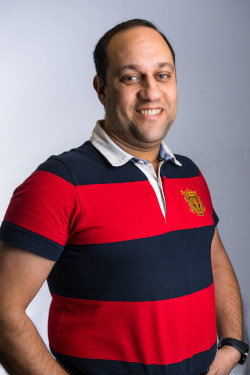

About me
With a BSc in civil engineering, and as projects manager for the past 12 years in one of the most challenging and dynamic industries in the world and in the most robust city, Dubai, I'm determined to live my life now doing what I enjoy the most and start a career in the software development. Bringing with me all life and professional skills gained over the years, along with what I learnt at Makers academy and before that as a hobbyist software developer.
Projects
Below is a table of my major GitHubprojects:
| Project | Description | Technologies |
|---|---|---|
| What-Zen | This was my final project at Makers Academy during weeks 11 & 12, the app helps users plan and manage their tasks to deliver a project, and allows them to chat together on the same project page to avoid losing focus while planning their work. | React, Firebase, Cypress, Node.js |
| My Notes | I developed this very handy, personalised notes application, during my learning of Ruby on Rails in my own time as I knew I shall be using it in one of my future projects at Makers Academy. | Ruby on Rails / RSpec |
| @cebook | This is a simple mimic of facebook that I developed with the desktop warriors team during weeks 8 & 9 in our Makers Academy coding boot camp. | Ruby on Rails / RSpec |
| Thermostat | This is a node.js application I created during my 5th week at Makers to demonstrate how fast I can learn a new technology and its TDD to deliver a full stack web app. | Node.js, Jasmine |
| Timer | I created my own application to calculate the time taken to carry out a function/method by running it 100 times for each input quantity and taking the average time taken. Quantity starts from 5000 elements and goes up to 300000 in increments of 5000. This was part of learning about algorithm complexity. | Node.js, Jasmine |
Below is a table of some projects (and their links) that I completed before joining Makers boot camp:
| Project | Description | Technologies |
|---|---|---|
| bigBOF.com | A free weekly and daily lottery website. Members can register, permanently add to their weekly tickets by connecting with other members, recommending the site to friends, and/or visiting the site's social networks pages. | PHP, MySQL, Javascript, HTML, CSS |
| Maya-in-the-park | An online flash game, where Maya (my eldest daughter) is chasing some candies in the park and the player needs to help her pick enough candies to extend the timer before the game ends. | Flash |
| Vapulator | This is an application to help those who like mixing their own e-juice for their e-cigarettes. It takes the required specs and calculates the proportions required from all ingredients to mix the final volume of liquid. | Visual C# |
| Text-guard | This program helps you convert any text you want to send to others with complete confidentiality into a sophisticated numeric code that can only be translated back to text using Text Guard lite with the same MINOR version number. | Visual C# |
Skills
- Self Teaching:
- - Since childhood I was so attracted to software development, and started with Basic on my commodore 64 back in the 80s. Later on in university I started reading books about C, then C++. As well as working for free during a summer holiday in a hardware company fixing desktop systems from scratch depending on the specifications set by our clients and installing all required software and operating system.
- - Later on I started learning Visual Studio and wrote few programs using Visual C#, 2 of which are Text Guard lite, and Vapulator.
- - I also taught myself a bit of flash and developed a very simple and basic online game [Maya in the Park](http://www.shendidy.com/games/mip.html), then my biggest challenge was when I wanted to start a free online lottery site where members can fill their free tickets weekly, connect with other players and earn more tickets, check their current and previous tickets, check any winnings, claiming their prize if any, and many other options. To do that I researched and learned HTML, CSS, JavaScript, PHP, and MYSQL. From the moment I had the website idea to launch it took me 9 months of learning and implementation during my free time of a 6 days a week very demanding job. Check it out at bigBOF.com.
- Problem Solving:
- - I believe that without problems, there will be no jobs for us out there, so they never scare me, they just tease my brain, and the harder the challenge, the more I get excited and commit to finding the best solution.
- - With this mindset, I managed to develop a stable, calm, and analytical approach to solving problems I face on my day to day life, or at work, asking the basic questions of:
-
- How they started (or what is the final requirement).
- What are the possible solutions and what are their consequences.
- Which one/s is/are the most relevant to the case I have in hand.
- What are the costs of each possible solution (money, time, memory, clarity of code, ease of use and integration with other parts of the project).
- Decide and start implementing the solution, while testing it regularly during implementation.
- Monitoring the performance after implementing a solution and ensuring it's inline with our requirements/expectations.
- Agile, scrum, and Pairing techniques:
- - At Makers, I practiced a lot of pairing and agile approach to deliver a project in accordance with the client's requirements, on time, clean and DRY, and fully tested.
- - Working in teams, we'd regularly (twice a day) do stand-ups to discuss briefly where each pair stand with their tasks and any blockage they're facing and help each other solving them. Then plan our works before our next stand-up.
- - Then every other day we'd have a retro to look at the bigger picture and analyse where the project stands from the plan put in place at the start phase and eliminate any deviation from it.
Education
- Makers Academy (January 2019 to March 2019)
- As London’s leading software development boot camp, Makers Academy students learn how to code in 16 intensive weeks and are set up with all the skills needed to become a developer. The boot camp focuses on:
-
- Agile methodologies
- Object Oriented Design
- Test driven development and behaviour driven development
- Pair programming
- XP values
- HTML, CSS, Flexbox, bootstrap
- Ruby, Rails, JavaScript, Node.js, React, PHP, C#
- SQL (mySQL, Postgresql) & nonSQL (firebase)
- RSpec, Jasmine
- Heroku, AWS
- Other qualifications
-
- BSc. in civil engineering – Alexandria University- Egypt 2002.
- NVQ Level 6 “Construction Contracting Operations Management” – UK 2015
- Black CSCS card (Construction Industry Training Board “CITB” – UK) 2015
- SMSTS (Site Management Safety Training Scheme – UK) 2015
- MCIOB (Chartered Construction Manager – UK)
- GMICE (Graduate Member of Institution of Civil Engineers – UK)
- Languages
-
- Arabic (mother tongue)
- English (fluent)
- Russian (fair)
- French (fair)
Experience
This is what I did before starting the adventure at Makers boot camp:
-
- Spie Batignolles International (Dubai - Sep 2015 to December 2018 - Project Manager)
- NSCC International Limited (Qatar - Sep 2014 to Sep 2015 - Project Manager)
- Orascom Construction Industries (Dubai - Dec 2010 to Apr 2013 - Project Manager)
- Dutco Balfour Beaty (Dubai - Aug 2007 to Nov 2010 - Project Manager)
- Skanska (UK - Apr 2004 to Jul 2007 - Project Engineer)
- May Gurney (UK - Jun 2003 to Feb 2004 - Assistant Site Agent)
- Misr Raymond Foundations (Egypt - Jul 2002 to Mar 2003 - Site Engineer)
Interests
- Flying:
- - Next to coding, my other childhood obsession was with flying, and I managed to make my dream come true in 2009 when I got my PPL (Private Pilot Licence) allowing me to fly my family and friends in single piston engine airplanes.
- Diving:
- One of the quietest and calmest experiences you can ever have is diving 40 feet below water and merging with the beautiful nature and creatures living in harmony far away from all the pollution generated by humans. With my Padi Advanced Diver qualification I grab any opportunity to dive whenever possible, particularly when I visit the red sea in Egypt.
- Reading:
- When I get a chance, I enjoy reading for authors like Dan Brown, and Sidney Sheldon.